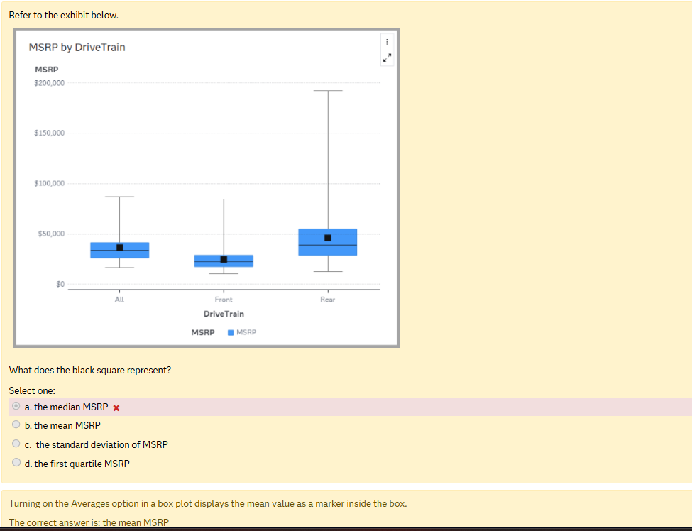
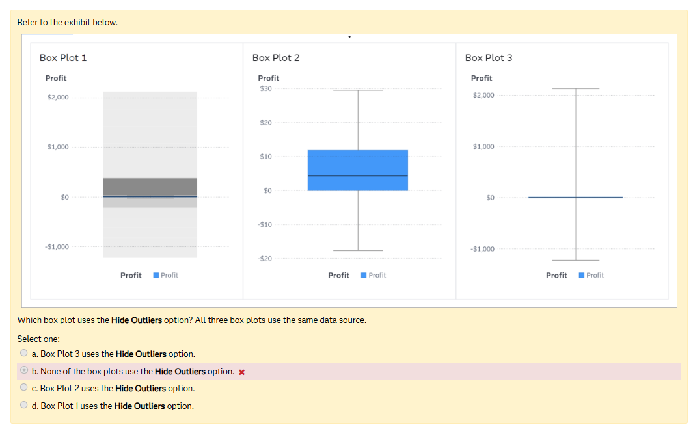

📦 Box Plot — Practice Quiz QUIZ ▶
📦 Topic 7: Box Plot — Basic
Q1: What does the horizontal LINE (──) inside the box represent?
✅ Median - LiMe LINE = MEDIAN. The median is the middle value.
❌ Mean: The mean is shown as a SQUARE, only if Averages option is ON.
❌ Std dev: Not shown as a line in the box.
❌ Q1: Q1 is the bottom edge of the box.
❌ Mean: The mean is shown as a SQUARE, only if Averages option is ON.
❌ Std dev: Not shown as a line in the box.
❌ Q1: Q1 is the bottom edge of the box.
Q2: What does the black SQUARE inside the box represent?

✅ Mean - SqMean SQUARE = MEAN. Only with Averages option ON.
❌ Median: The median is the LINE inside the box.
❌ Mode: Not shown in standard box plots.
❌ Q3: Q3 is the top edge of the box.
❌ Median: The median is the LINE inside the box.
❌ Mode: Not shown in standard box plots.
❌ Q3: Q3 is the top edge of the box.
Q3: What SAS option turns ON the black square mean marker?
✅ Averages - Adds mean marker for comparing mean vs median.
❌ Outliers: Controls how extreme values display Show/Hide/Ignore.
❌ Display Rules: Conditional formatting thresholds.
❌ Box Direction: Horizontal vs vertical orientation.
❌ Outliers: Controls how extreme values display Show/Hide/Ignore.
❌ Display Rules: Conditional formatting thresholds.
❌ Box Direction: Horizontal vs vertical orientation.
Q4: If LINE median and SQUARE mean are FAR APART, what does that mean?
✅ Data is skewed - Outliers pull the mean away from the median.
❌ Normal: If normal, mean median, so they would be close together.
❌ Box too small: Box size IQR is independent of mean-median distance.
❌ Normal: If normal, mean median, so they would be close together.
❌ Box too small: Box size IQR is independent of mean-median distance.
Q5: What are whiskers in a box plot?
✅ Acceptable range lines - Like a cats whiskers extending from its face!
❌ Decorative: Whiskers have statistical meaning - data range within 1.5 IQR.
❌ Connecting lines: Each box plot is independent.
❌ Decorative: Whiskers have statistical meaning - data range within 1.5 IQR.
❌ Connecting lines: Each box plot is independent.
📦 Topic 7: Box Plot — Advanced
Q6: Which outlier setting is the DEFAULT in SAS box plots?
✅ Hide Outliers - By default outliers are hidden. Included within whiskers.
❌ Show: Must manually toggle to see outlier dots.
❌ Ignore: Must manually toggle to exclude outliers.
❌ Show: Must manually toggle to see outlier dots.
❌ Ignore: Must manually toggle to exclude outliers.
Q7: With Show Outliers what happens to the whiskers?
✅ Stop at 1.5 IQR - Dots or gray bins shown for outliers beyond.
❌ Full range: That is Hide Outliers whiskers extend to include outliers.
❌ Disappear: Whiskers are always present unless IQR = 0.
❌ Full range: That is Hide Outliers whiskers extend to include outliers.
❌ Disappear: Whiskers are always present unless IQR = 0.
Q8: Three box plots same data. BP1 has gray outlier bins. BP2 looks normal. BP3 has no box. Which is Hide Outliers?

✅ BP2 normal - Gray bins = SHOW. Normal = HIDE default. No box = IGNORE.
❌ BP1: Gray area means outlier bins visible = SHOW not Hide.
❌ BP3: No box means IQR = 0 because outliers excluded = IGNORE.
❌ None: Since Hide is DEFAULT the normal box IS hiding outliers.
❌ BP1: Gray area means outlier bins visible = SHOW not Hide.
❌ BP3: No box means IQR = 0 because outliers excluded = IGNORE.
❌ None: Since Hide is DEFAULT the normal box IS hiding outliers.
Q9: Outliers are included within the whiskers means what?
✅ Whiskers extend to cover outlier values - Outliers absorbed into whisker range.
❌ Shrink: That would hide outliers by cutting them off not including.
❌ Part of box: Outliers dont affect IQR only the whisker range.
❌ Shrink: That would hide outliers by cutting them off not including.
❌ Part of box: Outliers dont affect IQR only the whisker range.
Q10: What does MSRP stand for?
✅ Manufacturers Suggested Retail Price - Car sticker price from SAS data.
❌ Market: Manufacturer not Market.
❌ Maximum: Wrong terms entirely.
❌ Market: Manufacturer not Market.
❌ Maximum: Wrong terms entirely.